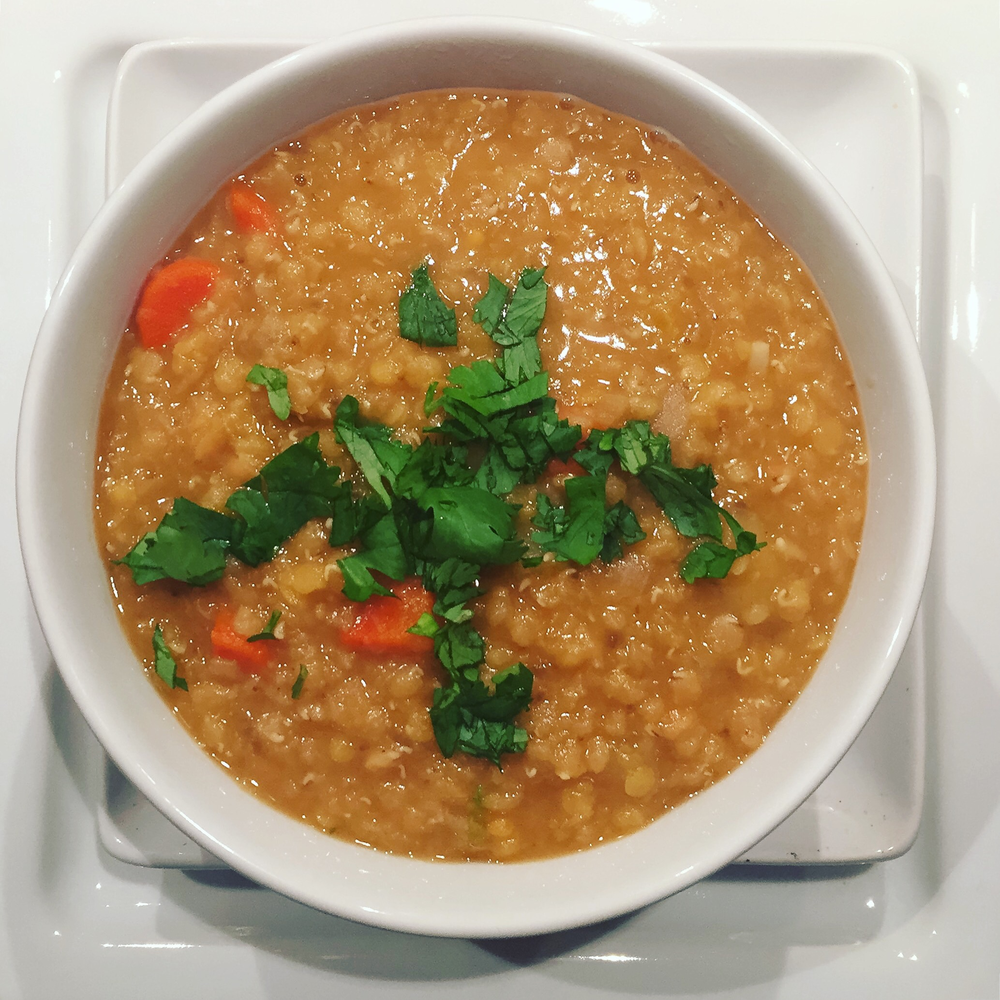

Lemony Red Lentil Soup

Description
This isn't your boring brown lentil mush. The spices and lemon makes this a next-level dish that you will actually want to eat.
The dish is vegan. However, feel free to substitute or add non-vegan options.
Ingredients
- 1 teaspoon olive or coconut oil
- 1/2 yellow onion, chopped
- 1 fist-sized russet potato, peeled and cut into dice sized cubes
- 1 carrot, chopped
- 2 cloves garlic, minced
- 1 teaspoon ground coriander
- 1/2 teaspoon ground cumin
- 1/4 teaspoon salt
- 2 cups red lentils, rinsed
- 6 cups vegatable broth
- 1/2 teaspoon grated lemon zest
- 1 tablespoon lemon juice
- 1/2 cup chopped fresh cilantro
Steps
- Heat a large soup pot over medium heat.
- Add onion and let saute for about 3 minutes, until soft and vaguely golden
- Add the potato and carrot, saute for another 2 minutes
- Add garlic and spices, saute for another 30 seconds
- Add salt, lentils and broth, let simmer, uncovered, until lentils are soft, 15 to 20 minutes. Stir every now and then
- Add lemon zest and juice, turn off heat
- Blend if you prefer creamy, or serve chunky
- Serve warm, topped with some chopped cilantro